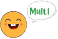
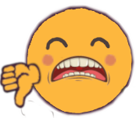

Hola, yo soy Quizzie y soy el emoji mas inteligente del mundo.
¿Crees que sabes más que yo?
Pongámoslo a prueba con una serie de preguntas sobre varias
categorías, especialmente seleccionadas por mí.
Voy a darte unas instrucciones antes de comenzar.
• Cada respuesta seleccionada erronea restará 0.15 puntos.
• Cada pregunta acertada completa sumará 1 punto (si es parcial se calculara el porcentaje).
• Las preguntas con respuesta múltiple te las indicaré así 
• Las preguntas con una única respuesta te las indicaré así
• Si la respuesta seleccionada es correcta me
pondré contento 
• Si la respuesta seleccionada es incorrecta me pondré triste 
• Si la respuesta correcta no ha sido seleccionada, la marcaré así.
Cuando estés listo escoge una categoria de preguntas en el panel izquierdo de la página y comienza a jugar.
Mucha Suerte!!